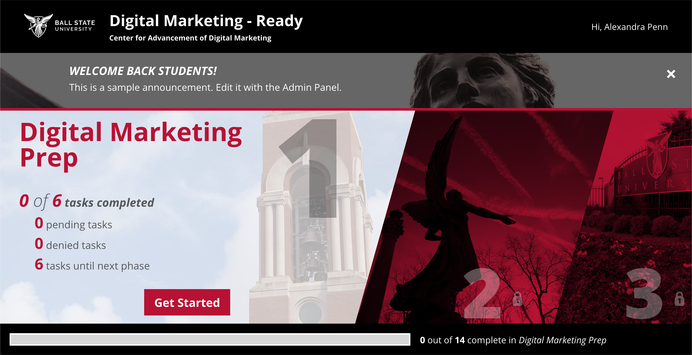
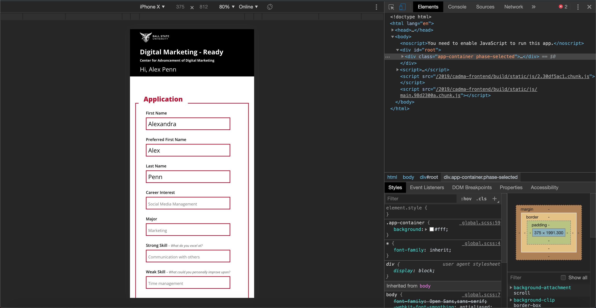
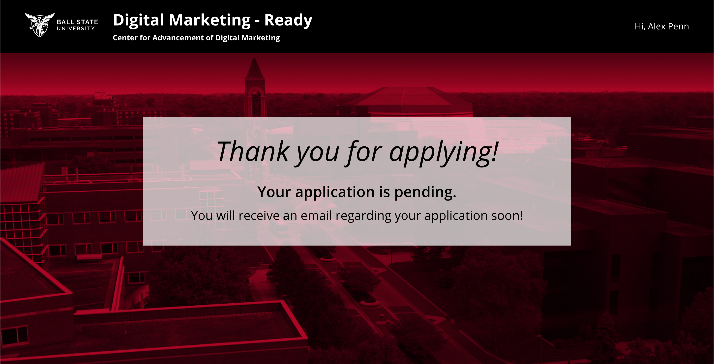
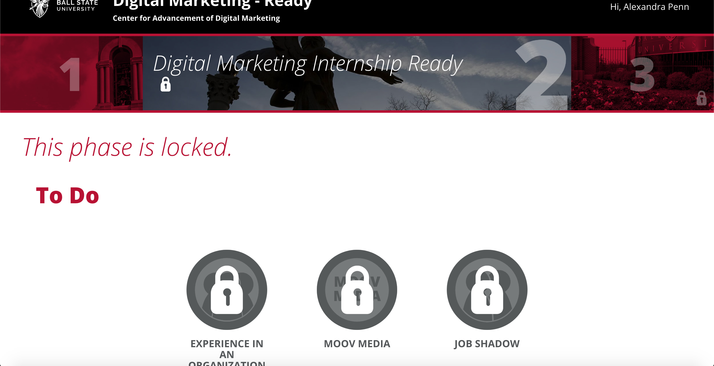
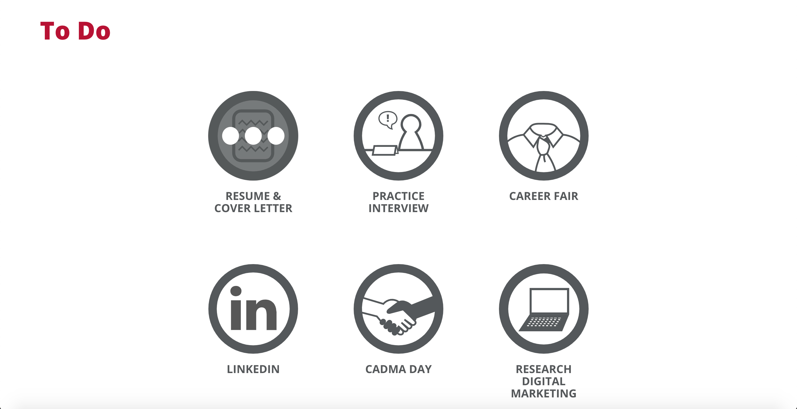

Digital Corps: CADMA Digital Marketing - Ready
Cadma was a Digital Corps project I worked on over the summer of 2019. Our client, a Ball State professor, wanted to have an online program for their students to learn about how to market themselves online. The website is split into three sections, all containing tasks that the student must complete. Students have to apply for this resource, so we made an application form built into the site. There is also a custom admin panel. I did the HTML and CSS on the student side of the project, except for the diagonal styling, and a corps staff member built the admin panel, which is why it is not included it in the photos below. The diagonals were styled by another staff member due to their extreme complication. The mockups of the website were done by other designers at the Digital Corps and I took their designs and did the HTML and CSS.
This is the home screen once you are signed in.
This is the form the student fills out when they are applying to the program. In this photo I am showing a mobile view of this form. The entire site is responsive and accessible.
Once the student has filled out the form, they are thanked for applying and instructed to wait for their results.
This a phase page. There are three phases and within the phases are tasks. The icons are the tasks.
 Below are videos that display a brief walk through of the site. The last video shows a task being opened. Once a task is opened the user can read its description and submit appropriate materials to complete the task. Their tasks are tracked by the progress bar at the bottom of the screen.